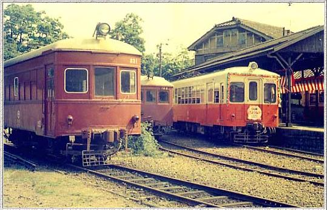
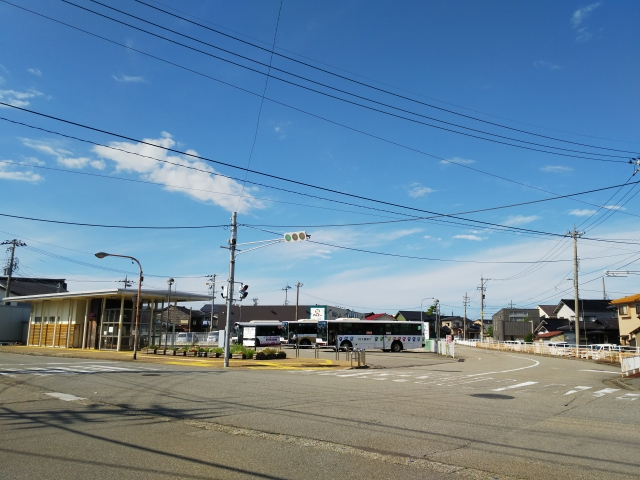
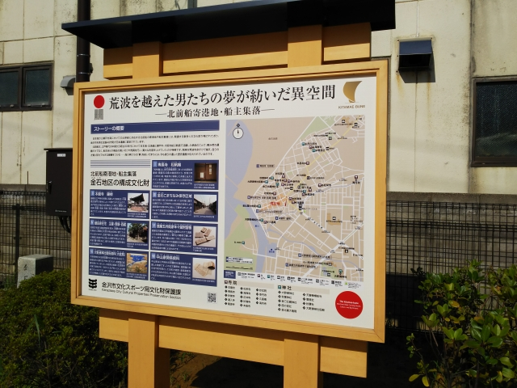

※踏切からの撮影です。どっかの議員さんみたいな
ことはしてまへん
高校の時に北鉄を訪問した時の写真。
電車が停まってるホームは同じですね。
同じ２両編成やけど、車体長が違うから、当時はホームの先
から撮れたんやね。
ちなみにこの訪問の時は、白山下まで路線があったのに、大雪
かなんかで加賀一の宮までやったんですよ。無茶無茶腹立った
記憶が・・・
残念ながら駅舎の写真を撮ってなかったから、よく
わからんけど、この待合スペースは当時はなかった
ような感じですね。
駅舎も相変わらずですね。
野町駅からは、香林坊に向けて歩きます。
駅の近くにはにし茶屋街があって、金沢らしい風景
が見れます。
犀川大橋が見えてきました。この無骨な橋も金沢ら
しい風景です。
昔は市内から野町まで路面電車が通っててこの橋を
渡ってました。
古い写真を見つけました。上の写真とほぼ同じ場所
からの撮影と思われます。
左側の橋から２番目の建物は、屋根を見ると同じっ
ぽいですね。
香林坊をぶらついて、金沢城へ。
復元された鼠多門。初めて見るわ。
>
玉泉院丸庭園。
無料で見れるなんて、太っ腹！
さて、時間がないので急いで次の目的地へ。
片町からバスに乗り込みます。
おっ、ＪＲの高架下に中橋の停留所がっ！

そう、北陸鉄道金石線の始発駅のあったとこです。
昭和４６年まで走ってました。

次の目的地は、その金石線の通っていた、金石・大
野地区です。
「金石」と書いて、「かないわ」と読みます。
バスは金石バスターミナルに到着。
ここが昔の金石駅です。
元鉄道駅を意識したバス停の看板ですね。
廃止日の金石駅。

金石地区は、日本遺産に登録されています。
浦さんは、次は日本遺産訪問にチャレンジするんす
よね？
正直、全然いけてなかったです。
２０分ほど歩いて、終点のあった大野地区へ。
醤油で有名だそうです。
といっても、街を歩いてると醤油の香りがほのかに
漂う、というほどでもなく・・・
金沢駅からシャトルバスを運行するなど、金石・大
野地区をプッシュしてるんですが、こりゃ無理です
わ。
先の方が、大野港駅跡です。
しかし廃止はもったいないなぁ。もう少し粘ってた
ら、金沢駅前や香林坊への延長なんかで充分やって
いけたと思うんやけど・・・
しかし、今シーズン、遊び過ぎっすよね。
日焼けの跡がくっきり。こんな５０代、おらんで。
青春１８を９日分使ったのは初ちゃうか。
減量ダイヤや並行在来線の廃止で、ますます使いづ
らくなる青春１８切符やけど、まだまだ使うでぇ～